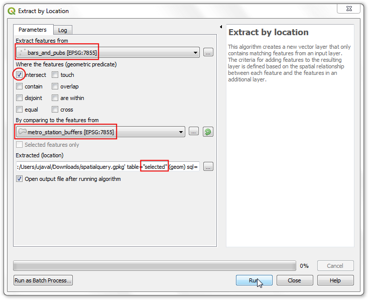

Ujaval Gandhi
Ujaval GandhiIzvršavanje prostornih upita (QGIS3)¶
Prostorni upiti su ključni za mnoge vrste GIS analize. Prostorni upiti vam omogućavaju da odaberete objekte u sloju prema njihovim prostornim odnosima (presecaju se, sadrže, dodiruju itd.) sa objektima iz drugog sloja. U QGIS-u, ova funkcionalnost je dostupna putem alata za obradu Izaberi po lokaciji i Izdvoji po lokaciji.
Pregled zadatka¶
Radićemo sa 2 sloja podataka za grad Melburn, Australija. S obzirom na slojeve podataka za pabove i barove u gradu i lokacije svih metro stanica, želimo da pronađemo sve barove i pabove u krugu od 500 metara od metro stanice.
Druge veštine koje ćete naučiti¶
Izbor odgovarajuće projekcije i reprojektovanje vektorskih podataka.
Kreiranje bafera.
Rad sa formatom podataka geopackage (.gpkg).
Dobijte podatke¶
Gradska platforma za otvorene podatke <https://data.melbourne.vic.gov.au/>`_ pruža mnoge skupove podataka spremne za GIS za grad.
Preuzmite skup podataka „Metro železničke stanice sa informacijama o pristupačnosti <https://data.melbourne.vic.gov.au/explore/dataset/metro-train-stations-with-accessibility-information/information/>”_ kompanije Metro Trains Melbourne. Izvezite podatke u originalnom formatu.

Preuzmite skup podataka „Barovi i pabovi, sa kapacitetom posetilaca <https://data.melbourne.vic.gov.au/explore/dataset/bars-and-pubs-with-patron-capacity/information/>”_ od strane Popisa korišćenja zemljišta i zaposlenosti grada Melburna (CLUE). Izvezite podatke kao CSV.
Radi lakšeg snalaženja, možete direktno preuzeti kopiju skupova podataka sa linka ispod:
metro_stations_accessbility.zip
Barovi_i_pabovi__sa_pokroviteljskim_kapacitetom
Izvor podataka: [CITIOFMELBOURNE]
Procedura¶
Pronađite datoteku
metro_stations_accessbility.zipu QGIS pregledaču i proširite je. Izaberite datotekumetro_stations_accessbility.shpi prevucite je na platno. Novi slojmetro_stations_accessbilityće biti učitan u panelu Slojevi.

Sloj podataka za barove i pabove je u CSV formatu. Da biste ga učitali u QGIS, idite na . (Pogledajte Uvoz tabela ili CSV datoteka (QGIS3) za više detalja o uvozu CSV datoteka)

U dijalogu Data Source Manager | Delimited Text, pregledajte i izaberite preuzetu datoteku
Bars_and_pubs__with_patron_capacity.csvkao File name. Kolone X field i Y field treba da budu automatski izabrane nax coordinateiy coordinaterespektivno. Kliknite na Add.

Белешка
QGIS čuva poslednje izabrane opcije za ovaj dijalog, tako da ako ste prethodno konfigurisali ovaj dijalog sa drugim opcijama, one i dalje mogu biti izabrane. Konkretno, uverite se da odeljak Opcije zapisa i polja ima opciju Broj redova zaglavlja za odbacivanje postavljenu na 0.
Videćete novi sloj
Bars_and_pubs__with_patron_capacitydodat na panel Layers. Oba ulazna sloja su u geografskom koordinatnom referentnom sistemu (CRS)EPSG:4326 WGS84. Za izvođenje prostorne analize preporučuje se korišćenje projektovanog koordinatnog referentnog sistema (CRS). Dakle, sada ćemo ponovo projektovati oba sloja na odgovarajući regionalni CRS koji minimizira izobličenja i omogućava nam da radimo u jedinicama udaljenosti kao što su metri umesto stepeni. Idite na .

Potražite i pronađite alatku . Dvaput kliknite da biste je pokrenuli.

Izaberite
Bars_and_pubs__with_patron_capacitykao Ulazni sloj. Kliknite na dugme Izaberi CRS pored Ciljaj CRS.
Prilikom izbora projektovanog koordinatnog sistema za vašu analizu, prvo mesto koje treba potražiti je regionalni CRS za područje od interesa. Za Australiju, Map Grid of Australia (MGA) 2020 je sistem mreže zasnovan na UTM-u koji se koristi za lokalno i regionalno mapiranje. Melburn spada u UTM zonu 55, tako da možemo odabrati CRS GDA 2020 / MGA zona 55 EPSG:7855`.

Белешка
Ako niste sigurni u lokalni CRS za region u kojem radite, odabir CRS-a za UTM zonu na osnovu WGS84 datuma je siguran izbor. Broj UTM zone vašeg regiona možete pronaći koristeći „UTM Grid Zones of the World <http://www.dmap.co.uk/utmworld.htm>“.
Zatim, kliknite na dugme … pored Reprojected i izaberite
Sačuvaj u GeoPackage. Geopackage je preporučeni otvoreni format prostornih podataka i podrazumevani je format za razmenu podataka za QGIS3. Jedna GeoPackage datoteka.gpkgmože da sadrži više vektorskih i rasterskih slojeva.

Nazovite geopaket kao
spatialqueryi kliknite na Sačuvaj.

Kada se od vas zatraži ime sloja, unesite
bars_and_pubsi kliknite na OK. Kliknite na Run da biste ponovo projektovali sloj.

Prozor će se prebaciti na karticu Log i videćete kako se algoritam pokreće i kreira novi izlazni sloj
bars_and_pubs.

Sada ćemo ponovo projektovati sloj
metro_stations_accessibility. Vratite se na karticu Parameters u prozoru Reproject layer. Izaberitemetro_stations_accessibilitykao Input layer. Zadržite isti Target CRS. Zatim, kliknite na dugme … pored Reprojected i izaberiteSave to GeoPackage. Izaberite istu izlaznu datotekuspatialquery(Imajte na umu da jedna geopackage datoteka može da sadrži više slojeva, tako da ćemo novi sloj sačuvati u istoj geopackage datoteci). Unesitemetro_stationskao Layer name. Kliknite na Run.

Nazad u glavnom QGIS prozoru, videćete 2 nova sloja učitana u Layers panelu:
bars_and_pubsimetro_stations. Možete isključiti vidljivost originalnih slojeva. Sada smo spremni da izvršimo prostorni upit. Pošto nas zanima da izaberemo barove i pabove u krugu od 500 metara od metro stanica, prvi korak je kreiranje bafera oko metro stanica koji predstavlja našu oblast pretrage. Potražite i pronađite alat u Processing Toolbox i dvaput kliknite da biste ga pokrenuli.

U dijalogu Buffer, izaberite
metro_stationskao Ulazni sloj. Postavite500metara kao Udaljenost. Sačuvajte izlaz u istispatialquerygeopaket i unesitemetro_stations_bufferskao Naziv sloja. Kliknite na Pokreni.

Videćete nove slojeve
metro_stations_buffersučitane u paneluguilabel:`Layers`. Sada možemo da saznamo koje tačke iz sloja ``bars_and_pubsspadaju u poligone iz slojametro_stations_buffers. Pronađite alatku ``menuselection:Vector selection –> Extract by Location iz ``Processing Toolbox` i dvaput kliknite da biste je pokrenuli.

Белешка
Izdvoji po lokaciji će kreirati novi sloj sa odgovarajućim karakteristikama iz prostornog upita. Ako želite samo da izaberete karakteristike, koristite alatku Izaberi po lokaciji.
U dijalogu Izdvoji po lokaciji, izaberite
bars_and_pubskao Izdvoji elemente iz. OznačiteIntersectkao geometry predikat. Postavitemetro_stations_bufferskao Poređenjem sa elementima iz. Sačuvajte izlaz u geopaketspatialquerykao slojselected. Kliknite na Pokreni.

Kada se obrada završi, videćete „izabrane“ slojeve dodate u panel Slojevi. Imajte na umu da ovaj sloj sadrži samo tačke iz „bars_and_pubs`` koje spadaju unutar poligona bafera.

Naša analiza je završena. Možda ćete primetiti da poligoni bafera izgledaju ovalnog oblika. To je zato što je naš CRS projekta i dalje podešen na EPSG:4326 WGS84. Da biste bolje vizuelizovali rezultate, možete otići na i izabrati
GDA 2020 / MGA zone 55 EPSG:7855koji smo koristili za analizu. Kada se podesi na ovaj CRS, bafer će se pojaviti u ispravnom obliku.

If you want to give feedback or share your experience with this tutorial, please comment below. (requires GitHub account)